Guide › Students
Students
Every student works on their own whiteboard from a Chromebook, laptop or tablet, in any web browser, and you see all of their work live. No apps, no accounts. (The pictures here show Chromebooks.)
1. Open the class
You need a class list first: Class tools → Names, then add your students' names (or paste a column of names from a spreadsheet).
- Open Class tools → Students. It's the same panel on the PC whiteboard, the iPad and the iPhone. The Students button in the PadLink window opens it too.
- Pick your class. Under Students start with, choose My lesson pages (each student gets a copy of your whiteboard's pages) or Empty boards (I'll send pages) (nothing of yours is copied until you send it). PadLink remembers your choice.
- Click Open the class.
- A join code fills the whiteboard for the class to scan. Back to the lesson puts it away; Show join code brings it back for latecomers.
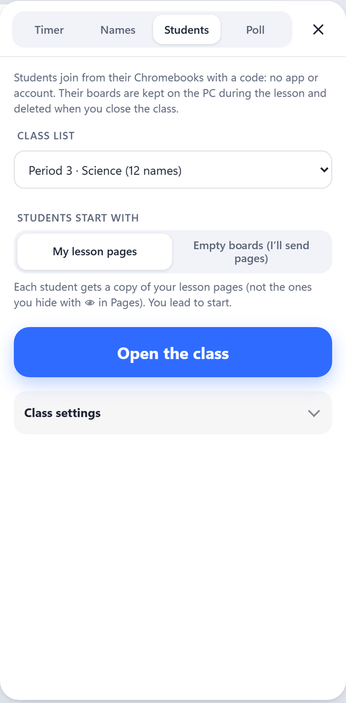
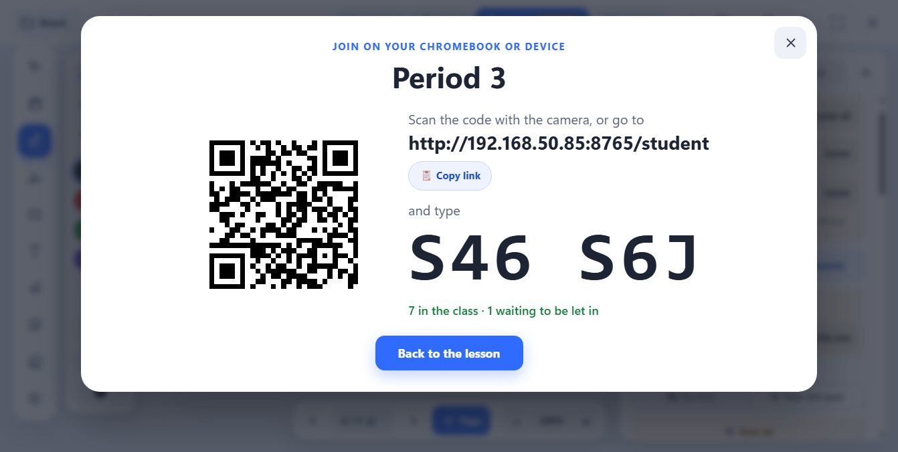
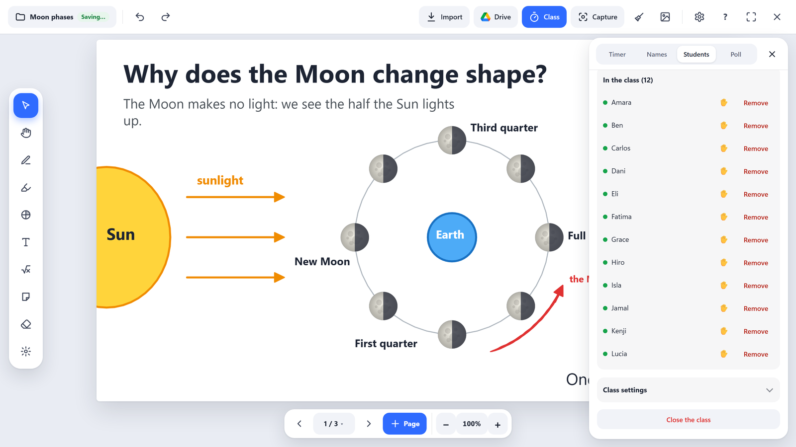
getpadlink.com/student and type the code (or scan the QR code), and their connection to your PC is encrypted. If their devices can reach your PC on the school network, you can choose School network under Students join through in this panel instead.2. Students join
- Students scan the QR code, or go to the address on the board and type the 6-letter code.
- They tap their own name and wait for you.
- You click Let in (or Not this one) for each, or Let everyone in. A badge on the Class button shows how many are waiting.
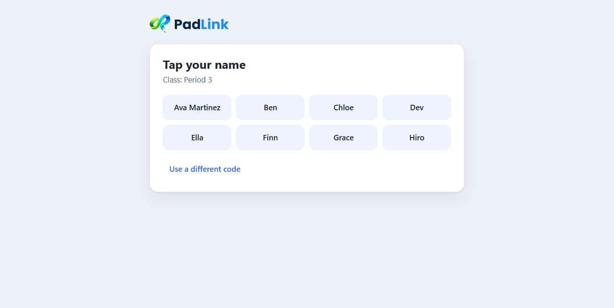
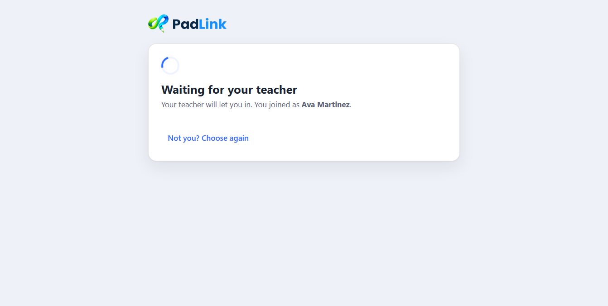
Post the link once
In Class tools → Students, Copy student link copies the address students join at. Post it in Canvas, Clever or Hapara, so students can click it instead of scanning or typing. They still type the class's 6-letter code each lesson. If your PC's address ever changes, the join code and the Students panel tell you, so you can post the new link (PadLink 0.58 or later).
A student on another Wi-Fi
When students join through the school network, a student's own phone or laptop on a different Wi-Fi (a guest network, say) can't reach your PC. On the join code, click Student on another Wi-Fi?: a second, smaller code appears. That student scans it, or types its address and the same 6-letter code. Only that student uses Remote mode's data, and they're marked Remote mode in the Students panel.
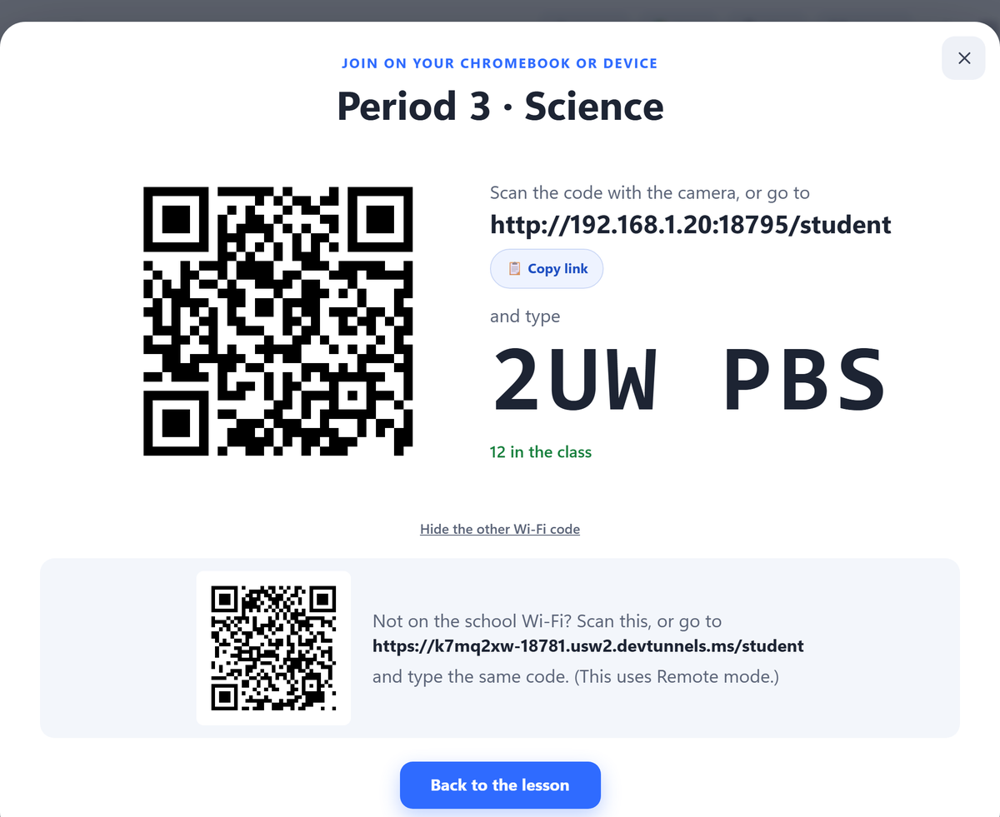
Once let in, a student's device reconnects by itself if it drops off or reloads during the lesson. Their work is kept on your PC.
3. See every board
Click See their boards for a live grid of every student's whiteboard. A green dot means they're connected right now.
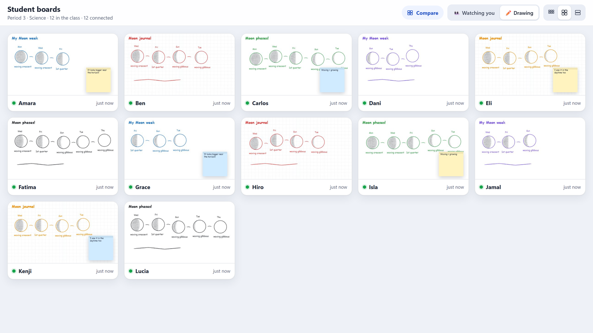
Click a board to look closer. You see it big, live as they work, and can flip through their pages. The arrow on the right (or the → key) goes to the next student.
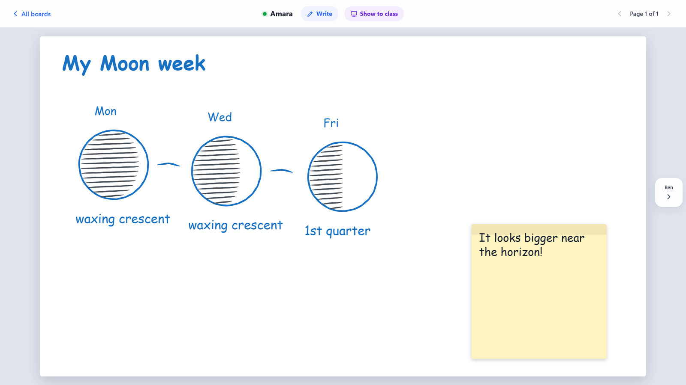
4. Write on a student's board
While looking closer, click Write. The whole whiteboard opens over their board, with every tool. Add a check mark, circle a mistake or write a hint, then click Done writing.
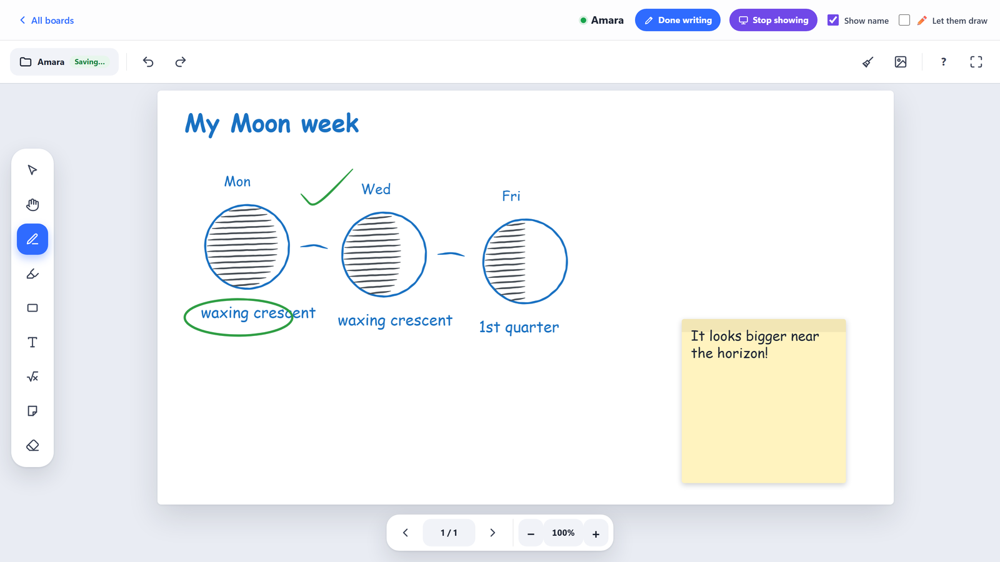
- Your marks appear on the student's screen straight away. If they're offline, the marks wait and arrive when they're back.
- Students can't erase or move your marks, and your tools can't change their work.
5. Show a student's work to the class
While looking closer, click Show to class. Their board goes up on the whiteboard for everyone.
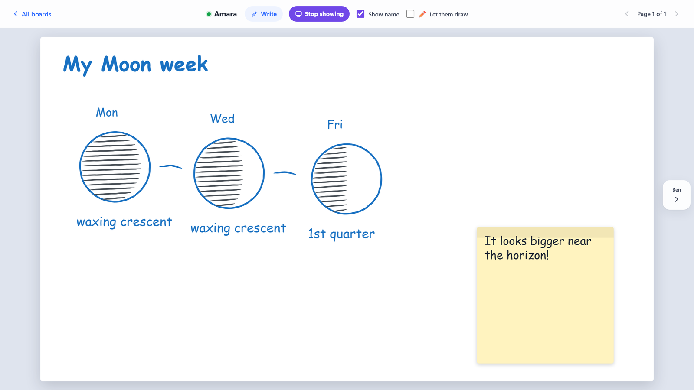
- No name by default, so nobody is put on the spot. Tick Show name to add it.
- While their board is up, the student is paused. Tick Let them draw to let them keep working on it in front of the class.
- Click Stop showing when you're done.
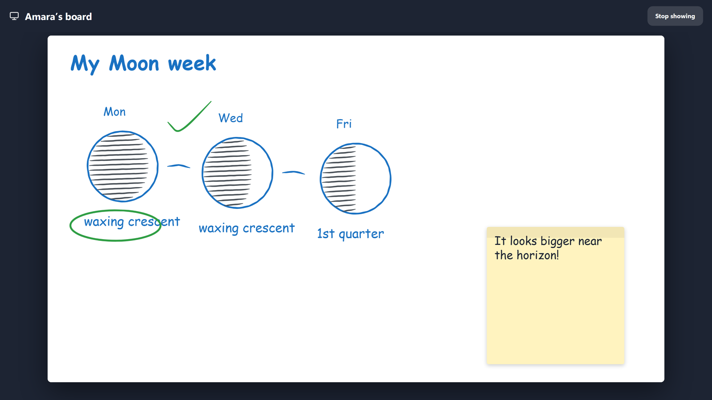
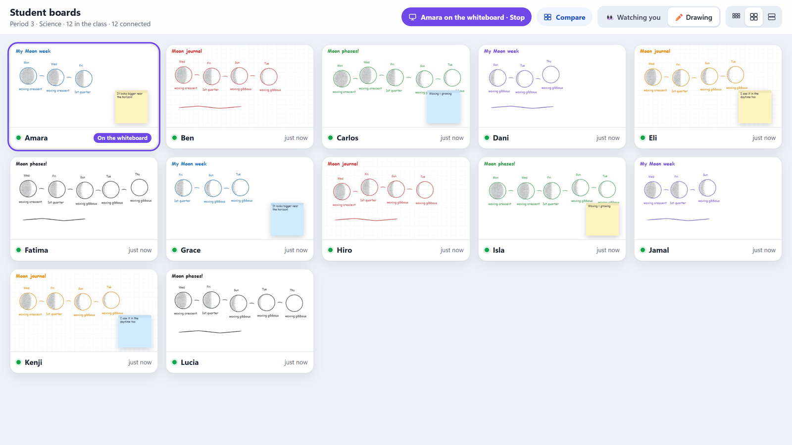
6. You lead, or their own pace
One switch in the Students panel decides who turns the pages.
👣 You lead
- Teach. Every student's screen shows your whiteboard page, live, including your laser pointer. They can't draw yet.
- Let them work. Click ✏️ Let them draw. Each student goes to their own copy of the page you're on and writes on it. Your writing on it is locked, so they can't erase it, and anything you write next shows up on their copies too.
- Look. See their boards shows everyone's work (above).
- Turn the page. Drawing switches off again, so you can teach before they start. To keep it on, tick Keep drawing on when I turn the page.
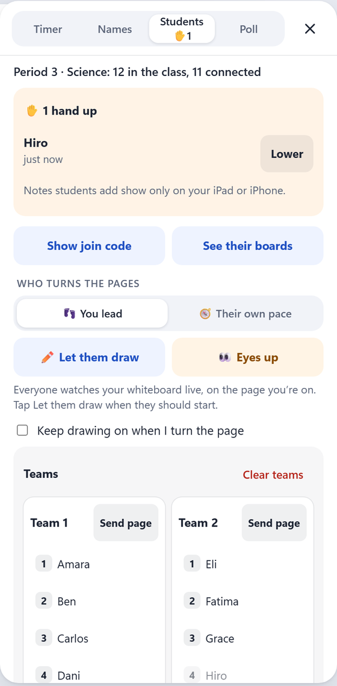
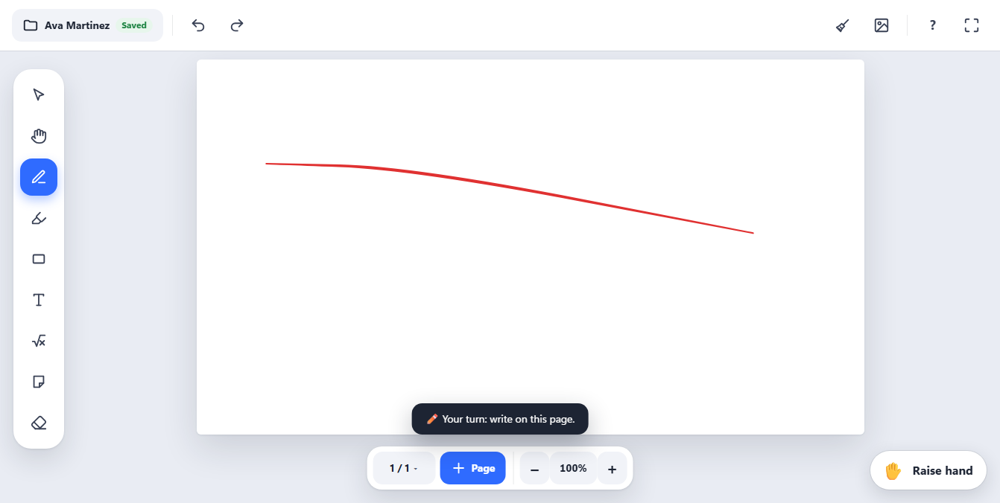
🧭 Their own pace
Students move through the pages themselves with ‹ and ›, and write on any of them. They start on the page you're on. Pages you add while they work appear for them too. Switch back to You lead and everyone comes to your page.
Polls at their own pace: a page with a prepared poll (📊, see Polls) shows its answer buttons when a student gets to it. With show ✓ or the right answer as soon as they lock in ticked, each student sees whether they were right straight away. Class tools → Poll shows how far each student has got: the page they're on, how many they've answered, and how many they got right. Switching back to You lead ends these polls, and their results join Lesson so far, the CSV and the report.
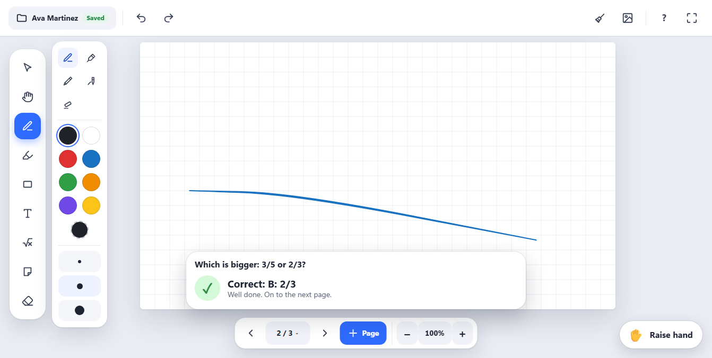
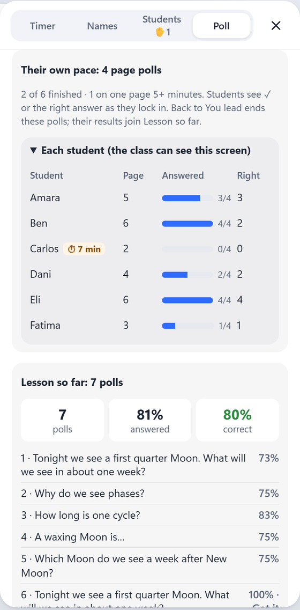
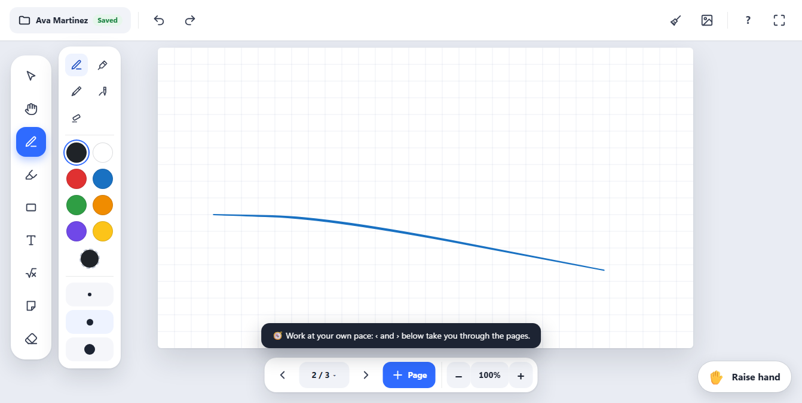
Compare boards side by side
Different students solved it different ways? Show their boards next to each other and talk it through.
- In See their boards, click Compare.
- Tap 2 to 4 boards. Each gets a letter: A, B, C, D.
- Click Show side by side. Names stay hidden unless you tick Show names.
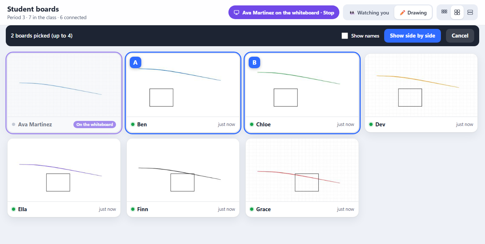
The whiteboard shows the boards as A, B, C and D, live as the students work. Students' screens say Look at the board meanwhile, so nobody can tell whose board is whose from their screen. Stop comparing at the top of the whiteboard (or the purple button in the grid) ends it.
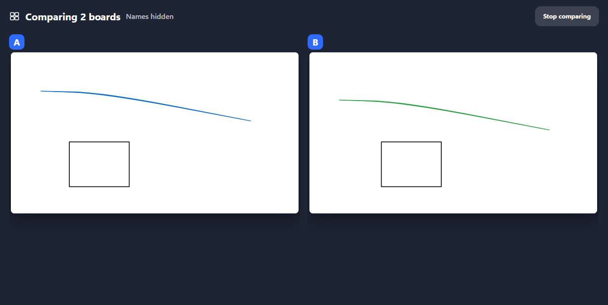
Eyes up
Need everyone's attention? Click 👀 Eyes up in the Students panel (beside Let them draw). Every student's screen says Eyes on the teacher, over everything else, and they can't draw or type meanwhile. Their work stays exactly as it was underneath. Click it again to give them their screens back.
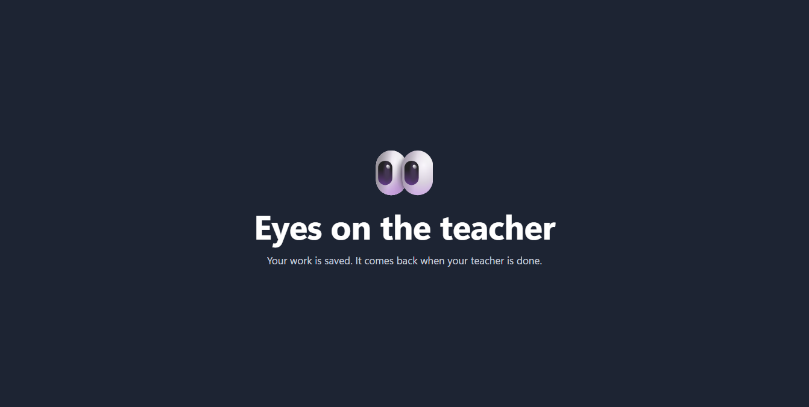
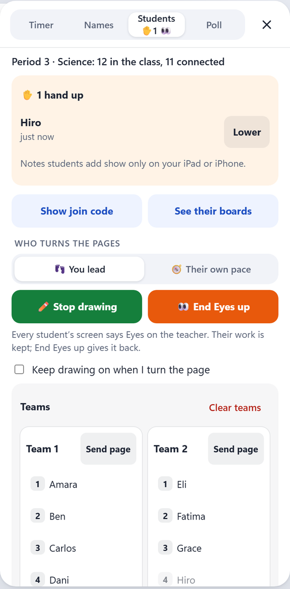
7. Hide a page from students
An answer key or your own notes can stay in the lesson without students ever getting them. Open Pages (click the page number) and click the page's 👁. It turns to 🚫: that page is never sent to students. You can do this while planning in PadLink Go, and it's saved with the board.
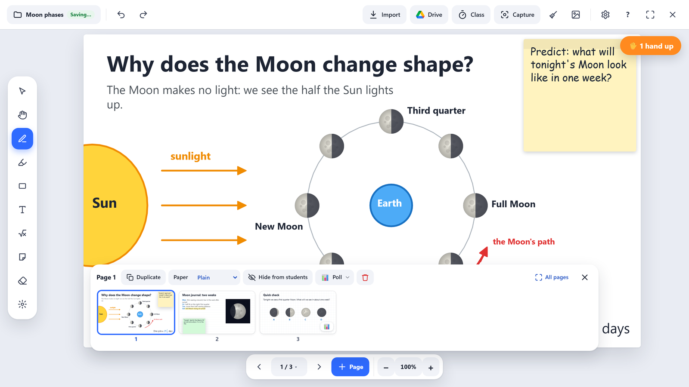
- Previous and Next skip hidden pages (the buttons, PgUp/PgDn, the arrow keys and a clicker), so the projector never lands on your answer key by accident.
- When a hidden page is just before or after the one you're on, a small eye tab shows beside the page bar, on that side. Hover over it to see which page; click it (or the page in Pages) to open it on the board.
- On a hidden page, a note at the top says Hidden page: not sent to students' devices. Students stay on the last page they could see, but the projector shows what you opened.
- On the iPad or iPhone, tapping a hidden page opens Peek: the page shows on your device only, and the projector doesn't change. Controlling the PC, the same eye tabs show beside the page bar; tapping one Peeks at that page. (On an iPhone held upright there's no room for the tabs, just the note; turn it sideways to see them.) Peek has Show on the board if you do want the class to see it. Pinch to zoom in on Peek (double-tap zooms in or back out, Whole page goes back): only your device zooms, never the PC or the projector.
- Hiding a page during the lesson takes it off students' boards. Anything a student already wrote on it stays.
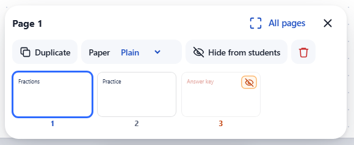
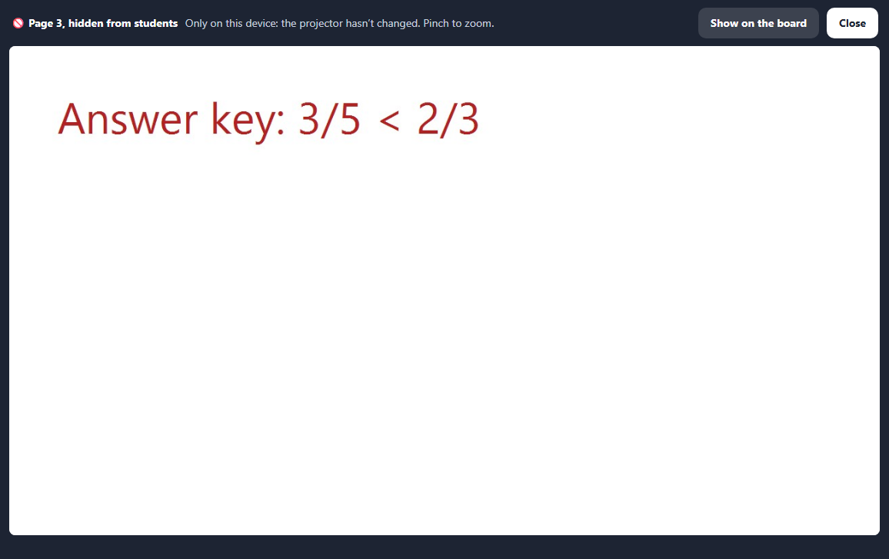
8. Choose what students can use
Under Class settings → Students can use, switch tools on or off for the whole class at once, even mid-lesson: shapes, text, math, sticky notes, pasting pictures, adding and deleting pages, clearing the page, and raise hand. (Moving between pages is the pace's: see above.) Switched-off tools disappear from students' boards. Your choices are kept for the next lesson.
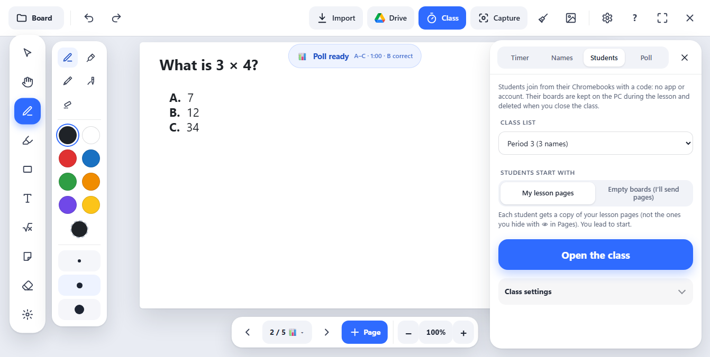
9. Raised hands
Students tap Raise hand on their screen and can add a few words for you.
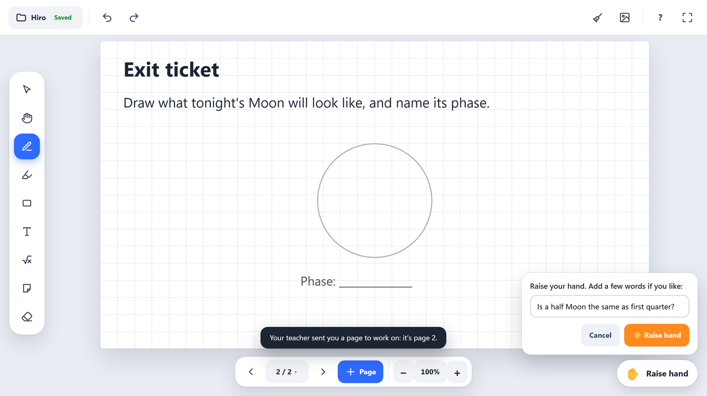
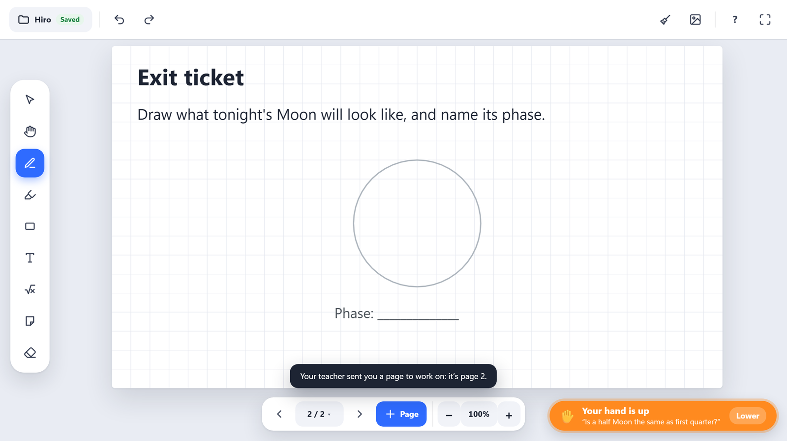
- Raised hands appear at the top of the Students panel, in order. Click Lower for one, or Lower all.
- The few words students add show only on your iPad or iPhone, never on the projector.
- The PC can chime when a hand goes up. Turn it on or off, and choose how often, in the panel's settings.
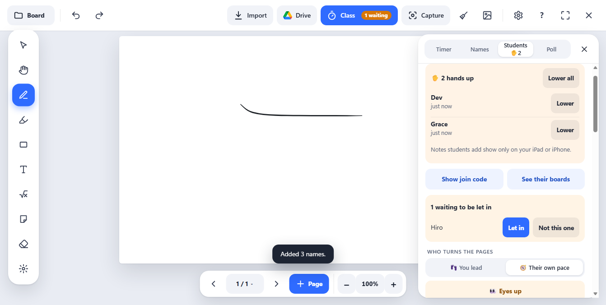
10. Remove a student, close the class
- Remove (beside a name in the panel) takes a student out and deletes their board. They can ask to join again.
- Close the class when the lesson ends: everyone is disconnected and every board is deleted.